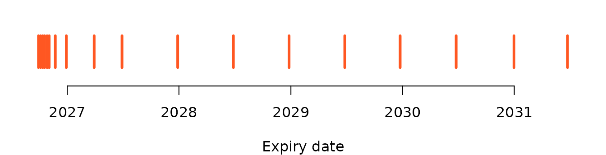

These functions find instruments you do not already know by name: a
share from part of its symbol, the expiries a futures or option
underlying has, the strikes listed for one expiry, and a whole option
chain. They stand in for the Python library’s class methods, so they are
stored on the class generator and called as
Equity$search(...) rather than on an object, because they
run before you have an instrument to hold, and each class fills in its
own segment so you never type one.
The table below lists the five kinds of call. Every one of them reads UBI’s instrument list and nothing else, so none of them can place an order.
| Kind | Member | Description |
|---|---|---|
| function on the class generator | search |
Securities or indices whose symbol contains a term, as a data frame of identities |
| function on the class generator | expiries |
The live expiry dates of one underlying’s futures or options, as a
Date vector |
| function on the class generator | contracts |
The futures contracts in the segment, optionally for one underlying, as a data frame |
| function on the class generator | strikes |
The strike prices listed for one underlying and one expiry, as a numeric vector |
| function on the class generator | chain |
Every option for one underlying and one expiry, as a data frame |
Which class has which call depends on the class’s shape.
search is written on each cash and index class, and the
other four are written on each futures or option class. R6 class
generators do not inherit functions stored on them, so each of the
twenty-seven classes carries its own copy, which names its own segment,
and all of them hand the work to one helper class, InstrumentCatalogue.
The table below shows the split across all twenty-seven classes.
| Classes | search |
expiries |
contracts |
strikes |
chain |
|---|---|---|---|---|---|
Equity, EquityIndex,
FixedIncome, FixedIncomeIndex,
Commodity, CommodityIndex,
Currency, CurrencyIndex,
ExchangeTradedFund, InvestmentTrust,
MutualFund
|
Yes | ||||
EquityFutures, EquityIndexFutures,
FixedIncomeFutures, FixedIncomeIndexFutures,
CommodityFutures, CommodityIndexFutures,
CurrencyFutures, CurrencyIndexFutures
|
Yes | Yes | |||
EquityOption, EquityIndexOption,
FixedIncomeOption, FixedIncomeIndexOption,
CommodityOption, CommodityIndexOption,
CurrencyOption, CurrencyIndexOption
|
Yes | Yes | Yes |
The strings these calls accept are exchanges such as nse
and mcx, and dates as a Date or
YYYY-MM-DD; Vocabulary
lists them all.
Call them on a family class.
The base classes name no segment. Futures$expiries() and
Futures$contracts() exist only to signal FuturesError, and
Option$expiries(), Option$strikes() and
Option$chain() signal OptionError, as
the Python base classes do. IndexFutures and
IndexOption carry no discovery functions at all in R, so
IndexFutures$expiries is NULL and calling it
fails with R’s “attempt to apply non-function” error. Call them on a
family class such as EquityFutures or
CommodityIndexOption.
Why two different UBI routes
UBI offers two ways to list instruments, and they suit different jobs. Its search route ranks names well but returns at most 200 rows, sorted by expiry with the oldest first, and has no way to ask for the next page. Its master route returns a whole segment with no limit but takes no filters.
For a share or an index that difference does not matter, because there is one row per name. For a derivative it decides everything. A search for NIFTY index options on 2026-09-20 with the maximum limit of 200 returned 200 rows that all shared one expiry, 2026-08-25, which had passed four weeks earlier; every live contract sat behind thousands of dead ones and could never be reached. So the package uses search only for names, and fetches the master list and narrows it itself for contracts.
The flowchart below shows which route each call uses, and what the package does to the answer.
flowchart LR
S["search"] --> R1["GET /api/instruments/search<br/>exchange, segment, q, limit"]
R1 --> F1["data frame of identities"]
E["expiries"] --> M
C["contracts"] --> M
K["strikes"] --> M
H["chain"] --> M
M["GET /api/instruments/master<br/>exchange, segment"] --> N["narrow here<br/>underlying, expiry,<br/>live or expired"]
N --> O["sort by expiry,<br/>strike, option type"]
O --> F2["data frame, or a vector<br/>of dates or strikes"]
The master list is fast because UBI is on the same machine and streams it. The table below shows the sizes, and the times the Python library took to fetch them, measured on 2026-09-20; the R port has not been timed.
| Segment | Rows | Time to fetch |
|---|---|---|
nse_equity_index_futures |
23 | 0.0 s |
nse_equity_index_options |
14,826 | 0.2 s |
nse_equity_options |
125,967 | 1.3 s |
Every call fetches the list again.
Nothing is cached, so asking for expiries and then a
chain downloads the segment twice. For single-stock options
that took about two seconds a call in Python. A stale expiry list would
be a worse failure than a slow one, which is why the package does not
keep the list between calls.
Rows, not objects
search, contracts and chain
return a data.frame of identities rather than instrument
objects. Building an object sends one lookup to UBI, so returning a
538-contract NIFTY chain as objects would mean 538 requests, where
returning rows means none. Build the two or three contracts you actually
want from their rows.
The table below lists the columns an identity data frame has. A row
carries no lot_size, tick_size or
carried_by; those arrive only when you build the object. A
value UBI leaves empty becomes NA, and a column that UBI
leaves empty in every row comes out as logical NA.
| Column | Type | Description |
|---|---|---|
instrument_id |
character | UBI’s UUID for the instrument |
exchange |
character | The exchange, lower case |
segment |
character | The exchange-prefixed segment |
shape |
character |
security, future or
option
|
symbol |
character or NA
|
The symbol of a security, NA for a contract |
underlying_symbol |
character or NA
|
The underlying of a contract, NA for a security |
expiry_date |
Date or NA
|
The expiry, converted from UBI’s text into a real
Date
|
strike_price |
numeric or NA
|
The strike of an option |
option_type |
character or NA
|
CE or PE for an option |
search
The function is called as
Equity$search(exchange, term, limit = 50, unified_broker_interface = NULL),
and it sends GET /api/instruments/search.
This function finds instruments in the class’s own segment whose
symbol contains a term, matched without regard to case. UBI puts an
exact match first, then symbols that start with the term, then symbols
that contain it anywhere, so a partial name such as RELI
finds RELIANCE near the top. It is on the eleven classes named by
exchange and symbol, and its default limit is the package constant
EQUITIES_SEARCH_LIMIT, or the matching constant of the
other families, all of which are 50.
Parameters
The table below lists the function’s arguments.
| Name | Type | Required | Default | Description |
|---|---|---|---|---|
exchange |
character | Yes | The exchange to search, such as nse
|
|
term |
character | Yes | The text the symbol must contain | |
limit |
integer | No | 50 |
The most rows to return. UBI caps it at 200. |
unified_broker_interface |
UnifiedBrokerInterface or NULL
|
No | NULL |
The client, or NULL for the shared one |
Example
The example below searches for shares whose symbol contains
RELI and for indices whose symbol contains
NIFTY, five rows at most each. When the Python version was
captured from a local UBI on 2026-09-26, the share search found only
four matches, RELIABLE, RELIANCE, RELIGARE and RELINFRA in that order,
and the index search returned NIFTY, NIFTY 100, NIFTY 200, NIFTY 500 and
NIFTY ALPHA 50.
Returns
A data.frame of identities, with the columns above, or NULL when
nothing matches. The columns arrive in the order UBI sends them, which
is alphabetical.
Errors
The table below lists the conditions the function can signal.
| Condition | When |
|---|---|
BadRequestError |
The exchange is not one UBI knows |
UnifiedBrokerInterfaceError |
Any other failure reported by, or on the way to, UBI |
expiries
The function is called as
EquityIndexOption$expiries(exchange, underlying_symbol, include_expired = FALSE, unified_broker_interface = NULL),
and it sends GET /api/instruments/master.
This function lists the expiry dates one underlying has contracts for in the class’s segment, soonest first. A contract that expires today counts as live, because it can still be traded until the close, and “today” is measured in India time. It is on all sixteen futures and option classes.
Parameters
The table below lists the function’s arguments.
| Name | Type | Required | Default | Description |
|---|---|---|---|---|
exchange |
character | Yes | The exchange, such as nse or mcx
|
|
underlying_symbol |
character | Yes | The underlying, such as NIFTY, RELIANCE or
GOLD. It is upper-cased before comparing. |
|
include_expired |
logical | No | FALSE |
TRUE to include expiries that have already passed |
unified_broker_interface |
UnifiedBrokerInterface or NULL
|
No | NULL |
The client, or NULL for the shared one |
Example
The example below lists the expiries of NIFTY index options, RELIANCE share futures and MCX gold futures.
print(EquityIndexOption$expiries(exchange = "nse", underlying_symbol = "NIFTY"))
print(EquityFutures$expiries(exchange = "nse", underlying_symbol = "RELIANCE"))
print(CommodityFutures$expiries(exchange = "mcx", underlying_symbol = "GOLD"))The table below lists what the Python version of these three calls returned when it was captured from a local UBI on 2026-09-26.
| Call | Expiries returned |
|---|---|
| NIFTY index options | 2026-09-29, 2026-10-06, 2026-10-13, 2026-10-19, 2026-10-27, 2026-11-03, 2026-11-23, 2026-12-29, 2027-03-30, 2027-06-29, 2027-12-28, 2028-06-27, 2028-12-26, 2029-06-26, 2029-12-24, 2030-06-25, 2030-12-31, 2031-06-24 |
| RELIANCE share futures | 2026-09-29, 2026-10-27, 2026-11-23 |
| MCX gold futures | 2026-10-05, 2026-12-04, 2027-02-05, 2027-04-05, 2027-06-04, 2027-08-05 |
The chart below places the eighteen captured NIFTY option expiries on a calendar. The weekly expiries crowd the first two months, and the long-dated ones run out to June 2031.

Errors
The table below lists the conditions the function can signal.
| Condition | When |
|---|---|
BadRequestError |
The exchange is not one UBI knows |
UnifiedBrokerInterfaceError |
Any other failure reported by, or on the way to, UBI |
contracts
The function is called as
EquityIndexFutures$contracts(exchange, underlying_symbol = NULL, include_expired = FALSE, unified_broker_interface = NULL),
and it sends GET /api/instruments/master.
This function lists the futures contracts in the class’s segment, for
one underlying or for every underlying when
underlying_symbol is left out. It is on the eight futures
classes, and it is the futures counterpart of chain.
Parameters
The table below lists the function’s arguments.
| Name | Type | Required | Default | Description |
|---|---|---|---|---|
exchange |
character | Yes | The exchange, such as nse
|
|
underlying_symbol |
character or NULL
|
No | NULL |
The underlying to keep, or NULL for every underlying in
the segment |
include_expired |
logical | No | FALSE |
TRUE to include contracts whose expiry has passed |
unified_broker_interface |
UnifiedBrokerInterface or NULL
|
No | NULL |
The client, or NULL for the shared one |
Example
The example below lists the NIFTY futures and builds the nearest one from its row. No output was captured for this call. A check recorded in the Python project’s notes on 2026-09-20 found that the same call returned the three live quarterly contracts.
nifty_futures <- EquityIndexFutures$contracts(
exchange = "nse",
underlying_symbol = "NIFTY"
)
nearest <- nifty_futures[1, ]
contract <- EquityIndexFutures$new(
exchange = nearest$exchange,
underlying_symbol = nearest$underlying_symbol,
expiry_date = nearest$expiry_date
)Returns
A data.frame of identities with the columns above, sorted by expiry, or
NULL when nothing matches.
Errors
The table below lists the conditions the function can signal.
| Condition | When |
|---|---|
BadRequestError |
The exchange is not one UBI knows |
UnifiedBrokerInterfaceError |
Any other failure reported by, or on the way to, UBI |
strikes
The function is called as
EquityIndexOption$strikes(exchange, underlying_symbol, expiry_date, include_expired = FALSE, unified_broker_interface = NULL),
and it sends GET /api/instruments/master.
This function lists the strike prices listed for one underlying and
one expiry, lowest first, with each strike appearing once even though it
has a call and a put. It builds the chain and takes its distinct strikes, so
it costs the same as a chain. It is on the eight option classes.
Parameters
The table below lists the function’s arguments.
| Name | Type | Required | Default | Description |
|---|---|---|---|---|
exchange |
character | Yes | The exchange, such as nse
|
|
underlying_symbol |
character | Yes | The underlying, such as NIFTY
|
|
expiry_date |
Date or character |
Yes | The expiry, usually one returned by expiries
|
|
include_expired |
logical | No | FALSE |
TRUE to allow an expiry that has already passed |
unified_broker_interface |
UnifiedBrokerInterface or NULL
|
No | NULL |
The client, or NULL for the shared one |
Example
The example below lists the strikes for the first NIFTY expiry. When the Python version was captured from a local UBI on 2026-09-26, the first expiry was 2026-09-29 and the call returned 269 strikes from 1500 to 49500. The middle of the list ran in steps of 50 from 17800 to 30000, and the ends ran in steps of 1500, so the list began 1500, 3000, 4500 and ended 46500, 48000, 49500.
Returns
A numeric vector of strike prices in rupees, lowest first, which is empty when nothing is listed for that expiry.
Errors
The table below lists the conditions the function can signal.
| Condition | When |
|---|---|
BadRequestError |
The exchange is not one UBI knows |
| A plain R error reading “Invalid isoformat string” |
expiry_date is a string that is not a valid ISO
date |
UnifiedBrokerInterfaceError |
Any other failure reported by, or on the way to, UBI |
chain
The function is called as
EquityIndexOption$chain(exchange, underlying_symbol, expiry_date, include_expired = FALSE, unified_broker_interface = NULL),
and it sends GET /api/instruments/master.
This function lists every option for one underlying and one expiry, a call and a put at each strike, sorted by strike and then by option type. It is on the eight option classes, and it is the usual starting point for building an option object, because each row carries the exact identity values the constructor needs.
Parameters
The table below lists the function’s arguments.
| Name | Type | Required | Default | Description |
|---|---|---|---|---|
exchange |
character | Yes | The exchange, such as nse
|
|
underlying_symbol |
character | Yes | The underlying, such as NIFTY
|
|
expiry_date |
Date or character |
Yes | The expiry | |
include_expired |
logical | No | FALSE |
TRUE to allow an expiry that has already passed |
unified_broker_interface |
UnifiedBrokerInterface or NULL
|
No | NULL |
The client, or NULL for the shared one |
Example
The example below builds the NIFTY chain for the first expiry and
prints its first five rows. When the Python version was captured from a
local UBI on 2026-09-26 for NIFTY’s 2026-09-29 expiry, the chain had 538
rows and nine columns, which is 269 strikes with a call and a put each.
Its first five rows were the 1500 call, the 1500 put, the 3000 call, the
3000 put and the 4500 call, each in the
nse_equity_index_options segment with NIFTY as
the underlying and no symbol.
chain <- EquityIndexOption$chain(
exchange = "nse",
underlying_symbol = "NIFTY",
expiry_date = expiries[[1]]
)
print(dim(chain))
print(head(chain, 5))In R, symbol is NA in every row of a chain,
because an option has no symbol of its own, and expiry_date
is a Date column.
Returns
A data.frame of identities with the columns above, or NULL when
nothing matches.
Errors
The table below lists the conditions the function can signal.
| Condition | When |
|---|---|
BadRequestError |
The exchange is not one UBI knows |
| A plain R error reading “Invalid isoformat string” |
expiry_date is a string that is not a valid ISO
date |
UnifiedBrokerInterfaceError |
Any other failure reported by, or on the way to, UBI |
include_expired
Every call except search takes
include_expired, and it defaults to FALSE,
because the first row of an unfiltered list is almost always a dead
contract. With TRUE, contracts whose expiry has passed are
kept, which is useful for looking back at a contract you once held. The
check on 2026-09-20 showed the difference for RELIANCE share futures,
and the table below reproduces it in R form.
| Call | Expiries returned |
|---|---|
EquityFutures$expiries("nse", "RELIANCE") |
2026-09-29, 2026-10-27, 2026-11-23 |
EquityFutures$expiries("nse", "RELIANCE", include_expired = TRUE) |
2026-08-25, 2026-09-29, 2026-10-27, 2026-11-23 |
UBI keeps only the instruments it has mapped, so how far back an expired list reaches depends on how long UBI has been running, not on this package.
From a row to an object
A discovery row is only an identity. To quote or trade it, pass its
identity fields to the class’s constructor, which looks it up once and
returns the full object. The example below does this for the nearest MCX
gold future. When the Python version was captured from a local UBI on
2026-09-26, the contract printed as
CommodityFutures(exchange='mcx', segment='mcx_commodity_futures', underlying_symbol='GOLD', expiry_date='2026-10-05'),
with a lot size of 100, a tick size of 1 and a last price of
150734.0.
expiries <- CommodityFutures$expiries(
exchange = "mcx",
underlying_symbol = "GOLD"
)
gold <- CommodityFutures$new(
exchange = "mcx",
underlying_symbol = "GOLD",
expiry_date = expiries[[1]]
)
print(gold)
cat(gold$lot_size, gold$tick_size, "\n")
print(gold$last_price)For an option, take the row from chain and pass its
exchange, underlying_symbol,
expiry_date, strike_price and
option_type to the option class. Instruments
records the check that proved a row and a constructed object always
share the same instrument_id.
Under the hood.
search sends exchange,
segment, q and limit to Search.
The other four send exchange and segment to Master,
then keep the rows whose underlying_symbol equals the
upper-cased underlying, whose expiry matches when one was given, and
whose expiry is today or later in India time unless
include_expired is TRUE. The mechanism lives
in the methods of InstrumentCatalogue,
which stand in for the Python library’s protected class methods on
Instrument. Each family class’s functions build a catalogue
and pass their own segment constant, such as
EQUITIES_EQUITY_OPTIONS_SEGMENT, so each named class
supplies its own segment in its own file.